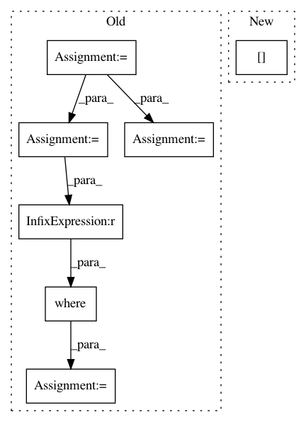

d4be1706ea38f52a4291c01261be4875246a523c,io/eolearn/io/local_io.py,ExportToTiff,_get_bands_subset,#ExportToTiff#Any#,54
Before Change
def _get_bands_subset(self, array):
bands = np.array(range(array.shape[-1]))
if isinstance(self.band_indices, list):
if [band for band in self.band_indices if not isinstance(band, int)]:
raise ValueError("Invalid format in {} list, expected integers".format(self.band_indices))
array_sub = array[..., np.array(self.band_indices)]
elif isinstance(self.band_indices, tuple):
if tuple(map(type, self.band_indices)) != (int, int):
raise ValueError("Invalid format in {} tuple, expected integers".format(self.band_indices))
array_sub = array[..., np.nonzero(np.where(
(bands >= self.band_indices[0]) & (bands <= self.band_indices[1]), bands, 0))[0]]
else:
raise ValueError("Invalid format in {}, expected tuple or list".format(self.band_indices))
return array_sub
After Change
if isinstance(self.band_indices, tuple):
if tuple(map(type, self.band_indices)) != (int, int):
raise ValueError("Invalid format in {} tuple, expected integers".format(self.band_indices))
return array[..., self.band_indices[0]: self.band_indices[1] + 1]
raise ValueError("Invalid format in {}, expected tuple or list".format(self.band_indices))
def _get_dates_subset(self, array, dates):
In pattern: SUPERPATTERN
Frequency: 3
Non-data size: 7
Instances
Project Name: sentinel-hub/eo-learn
Commit Name: d4be1706ea38f52a4291c01261be4875246a523c
Time: 2019-04-29
Author: matej.aleksandrov@sinergise.com
File Name: io/eolearn/io/local_io.py
Class Name: ExportToTiff
Method Name: _get_bands_subset
Project Name: aertslab/pySCENIC
Commit Name: 6d6a32dd677aa6097c4e77b359f81989c3e949af
Time: 2018-04-05
Author: vandesande.bram@gmail.com
File Name: src/pyscenic/rnkdb.py
Class Name:
Method Name: build_rankings
Project Name: NifTK/NiftyNet
Commit Name: ad66bf0a8faf1f230891faea92c31d8a3a0baa3f
Time: 2017-10-04
Author: wenqi.li@ucl.ac.uk
File Name: niftynet/engine/sampler_selective.py
Class Name:
Method Name: candidate_indices